This article explains how to generate Subject Access Request (SAR) documents for patients using the Meddbase platform. SARs allow patients to request a copy of their personal data, which can be compiled into a single document with associated files for secure distribution.
For information on using the new Subject Access Request (SAR) feature that allows generating and downloading the full patient record, including all associated documents, see Generate a complete Subject Access Request (SAR).
This article designed to guide you through the process of generating Subject Access Request (SAR) documents for patients using the Meddbase platform.
Learn how to use our SAR template to compile patient records into a single document and simultaneously attach associated files for easy and secure distribution.
The SAR template can be found under Start Page > Templates > Patient Templates > Medical Record.
Find the Patient: Locate and identify the patient for whom you need to generate the SAR document.
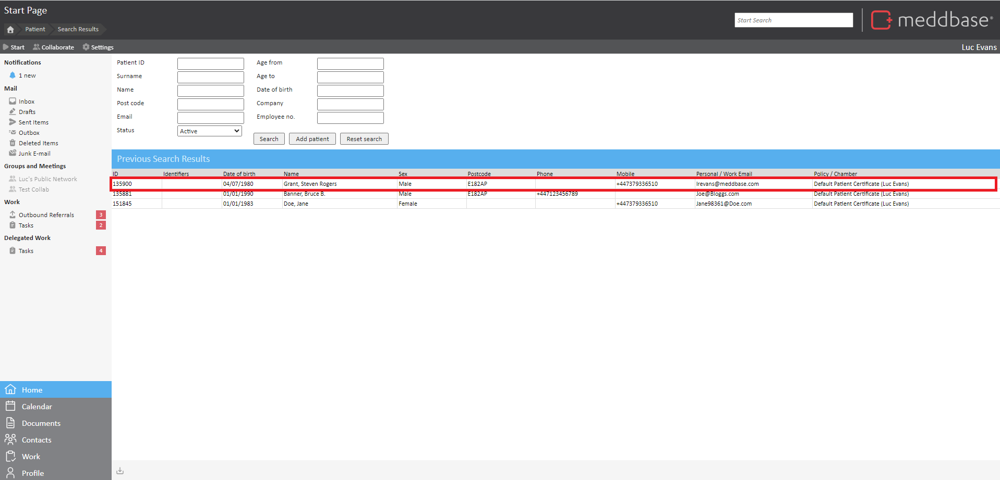
Navigate to Documents: Access the document section of the patient record. 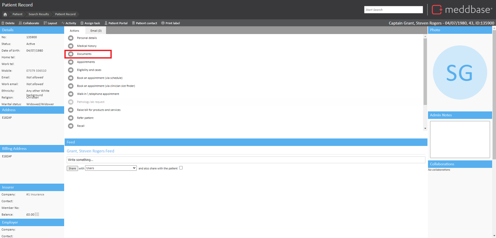
Click New: Within the document management interface, look for the option to create a new document in the top left corner.
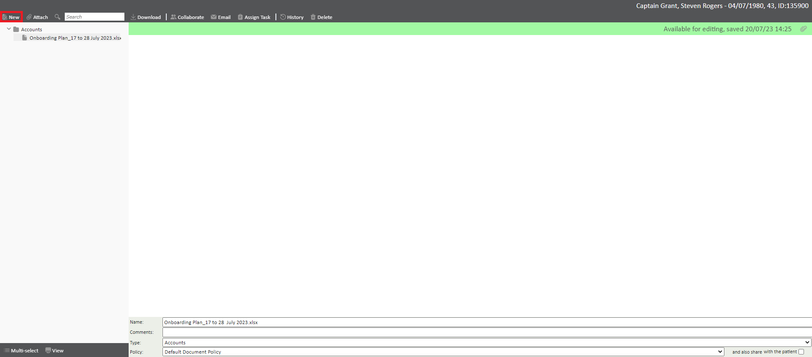
Select "From Template": Choose the option that allows you to create a document from a template. 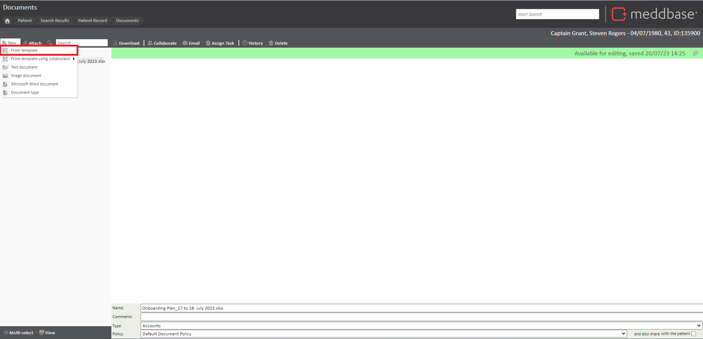
Locate the SAR Template: Browse through the available templates and find the SAR (Subject Access Request) template, specifically designed for generating SAR documents.
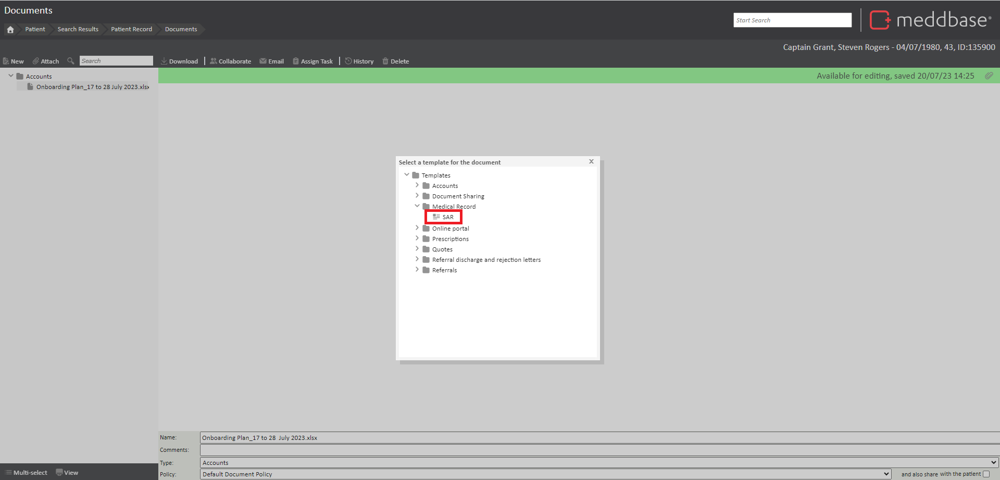
Click "Create": Once you've selected the SAR template, initiate the creation process by clicking the Create button. 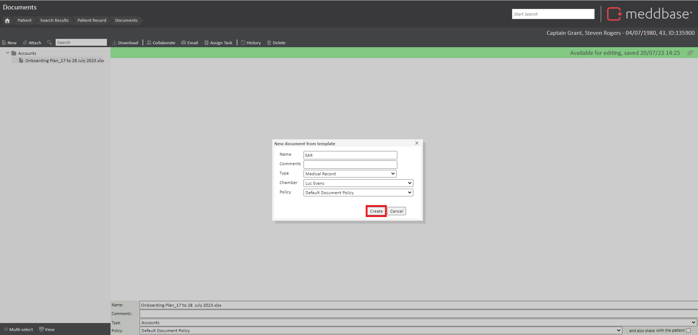
Generate the SAR Document: The system will automatically populate the SAR document with relevant placeholders and information based on the patient's details.
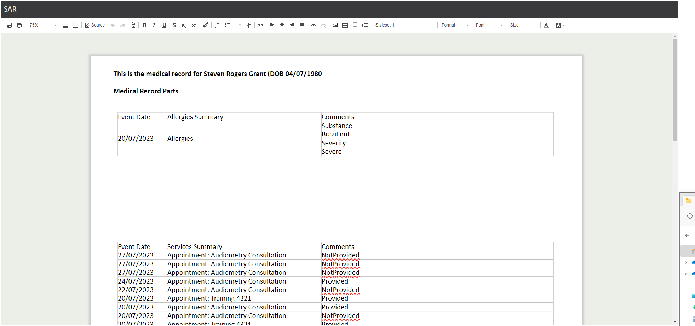
Click "Save": After the SAR document has been generated and populated, click the "Save" button to save the document within the document management system. 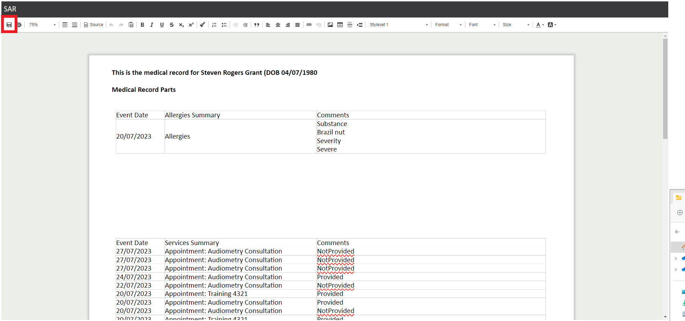
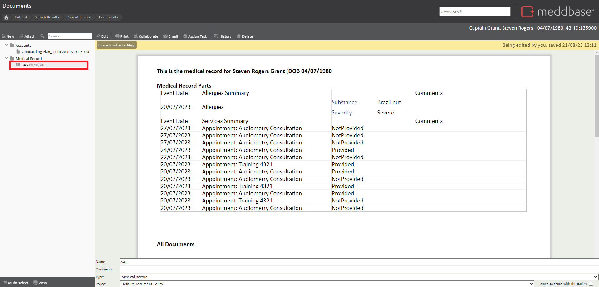
Choose Sharing Method: Depending on your preferred method of sharing the SAR document, make a selection from the following options:
a. Share via Patient Portal: If your organisation uses the patient portal, tick 'also share with patient' in the bottom right to share the SAR document securely through the portal.
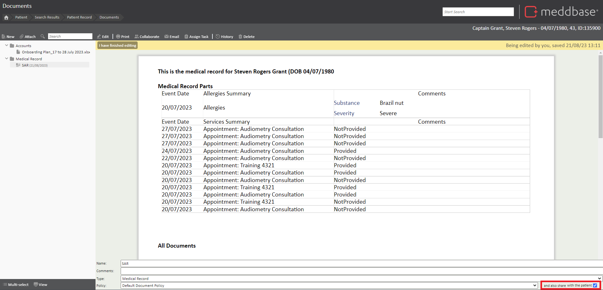
b. Email Document: If you prefer to send the SAR document via email, choose one of the following options:
Regular Attachment: Attach the SAR document to the email as a standard file attachment.
Secure Link: Provide a secure link to the SAR document hosted on a secure server or platform.
Email Body: Embed the content of the SAR document directly within the email body.
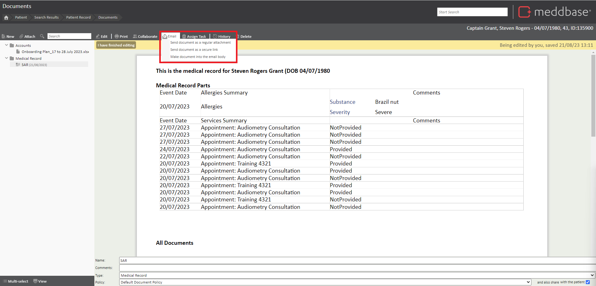
Complete Sharing: Follow the prompts provided by the system to complete the sharing process according to the method you selected.